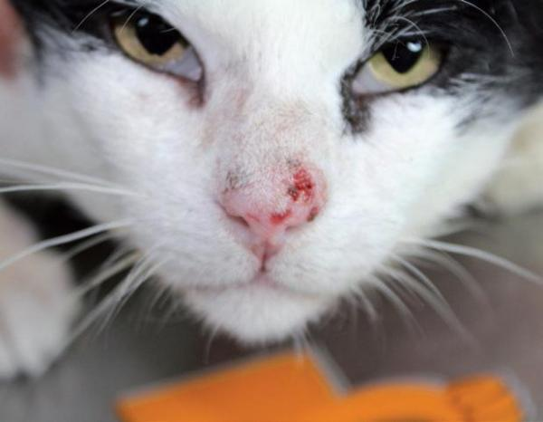

El carcinoma de células escamosas en gatos es una patología que afecta especialmente a las capas más claras, sobre todo a los de color blanco, provocando la aparición de células tumorales en las zonas con menor densidad de pelo como orejas y nariz. Esta enfermedad avanza rápidamente provocando la destrucción de tejidos en el área afectada. La mejor opción frente al cáncer de piel en gatos es la prevención, ya que el tratamiento es costoso y conlleva una cirugía muy agresiva.
CAUSA DEL CARCINOMA O CÁNCER DE PIEL EN GATOS
La causa principal del cáncer de piel en gatos es una excesiva exposición a los rayos solares, aunque también puede incidir un factor genético que explicaría porqué ante las mismas condiciones de vida unos gatos desarrollan el tumor y otros no. En los gatos de capa clara la piel no pigmentada es especialmente sensible a la alteración del ADN de las células de la piel. Cuando esto sucede el tejido comienza a multiplicarse de forma descontrolada provocando un tumor que se comporta de forma muy agresiva a nivel local, avanzando rápidamente e invadiendo estructuras cercanas.
SÍNTOMAS DEL CARCINOMA DE NARIZ EN GATOS
- Los síntomas son variables en función de la zona que se vea afectada, causando signos poco específicos como:
- Moqueo
- Estornudos
- Sangrado nasal
- Mal aliento
- Dificultad para comer
- Apatía
Sin embargo, lo más habitual es que destaquen los síntomas del cáncer de nariz en gatos o los del cáncer de orejas en gatos. Los primeros cambios que se observan tanto en el carcinoma orejas gatos como en el carcinoma de nariz en gatos son enrojecimiento de la piel, que se ve engrosada y ligeramente acartonada y rígida. Suele comenzar en las puntas de las orejas y a ambos lados de la nariz. Poco a poco aparecen heridas y costras que no curan y el tumor va dañando el tejido cercano, quedando la zona mal formada e irregular como si los bordes estuvieran siendo “comidos”.
TRATAMIENTO, PRONÓSTICO Y PREVENCIÓN DEL CÁNCER DE PIEL EN GATOS
El tratamiento del cáncer de piel en gatos más habitual es la cirugía. Se trata de un procedimiento agresivo que incluye la extirpación de un margen de tejido sano para asegurar que se retira por completo el tejido tumoral y porque las zonas a extirpar, sobre todo en el caso de cáncer de nariz en gatos (nariz y orejas) por ser áreas muy visibles. Esto hace que el aspecto final del animal pueda ser algo impactante y algunos dueños duden por esta opción. Tras la operación suele ser necesario administrar un tratamiento de radioterapia y/o quimioterapia para eliminar las células neoplásicas que hayan podido llegar a zonas más lejanas. El pronóstico del carcinoma en gatos es muy variable en función del tratamiento seguido y de la fase en que se encuentre el tumor. De forma general cuanto más pequeño sea el tumor más sencilla y rápida será la recuperación.